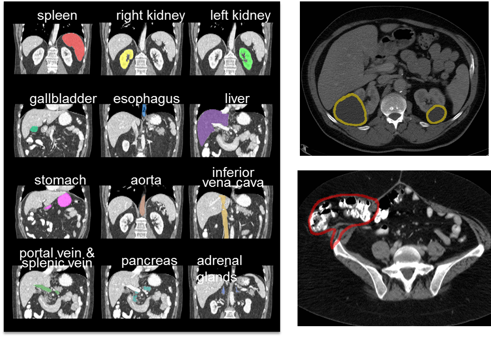

Introduction
Image registration has become an essential image processing technique to compare data across time and individuals. With the successes in volumetric brain registration, general-purpose software tools are beginning to be applied to abdominal computed tomography (CT) scans. My work explored the uses of five image registration tools on abdominal CT scans. I presented a poster at the Vanderbilt undergraduate research symposium, and published my paper in the SPIE Conference 2015 in Orlando, Florida. Furthermore, I was designated an oral presentation at the SPIE Conference. This page is a surface level overview of the research conducted. For an in depth read, links can be found to the paper and poster at the bottom of page.
Masi Lab - Summer 2014Purpose
The main purpose of my research:
- To analyze the performance of five state-of-the-art image registration tools on 20 abdominal CT scans using default parameters
- Establish baseline performance with state-of-the-art image registration tools for development
Data Set
The data used in the study consisted of 20 patients randomly selected from a 100 person data set with hernias and colorectal cancer. The CT scans were cropped to include 12 organs of interest: the spleen, right kidney, left kidney, gallbladder, esophagus, liver, stomach, aorta, inferior vena cava, protal vein and splenic vein, pancreas, and adrenal glands. The CT scans used as the point of truth were labeled by two experienced undergraduates and verified by a radiologist.
 The organs of interest and hernias (top right) and colorectal cancer (bottom right)Proposed Method
As illustrated below, for each target image among the 20 scans, the remaining 19 atlases were used as source images to the target image in a pair-wise manner, thus 380 sets of output were generated. For each pair of the atlas and target, the registration was first driven by the dissimilarity metrics between their intensity images. The associated atlas label was then propagated to the target space with nearest neighbor interpolation as the estimate of the target structures based upon the transformation/deformation generated from the intensity-driven registration. In the end, the registered labels on the twelve ROIs were validated against the manual segmentation as the evaluation of the registration results. For all software packages, we used the default parameters of the registration tools except as noted in the paper
Results
The average of all organs top 1 and top 5 registrations DSCConclusion
The top performing registration from each of the programsProject Links: Poster | Paper | | MASI Lab